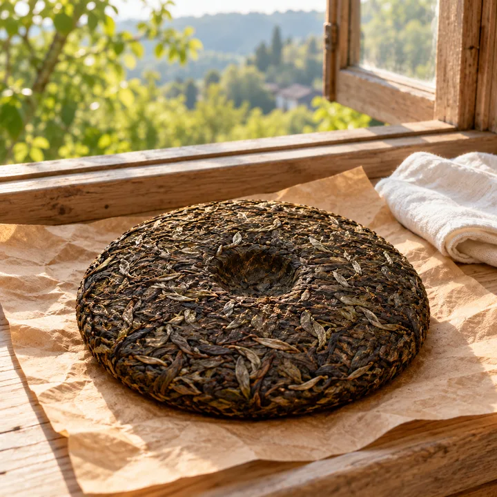
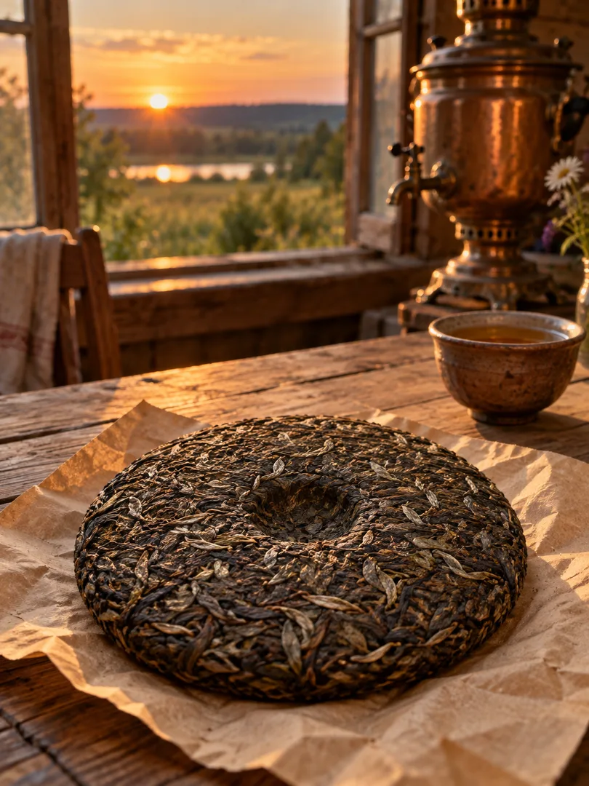
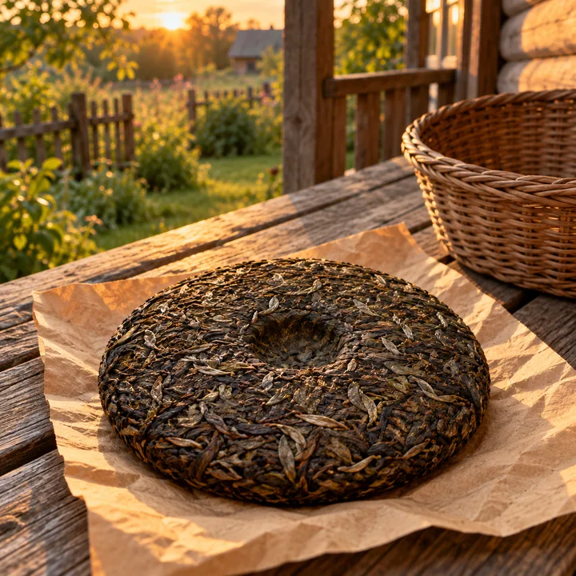
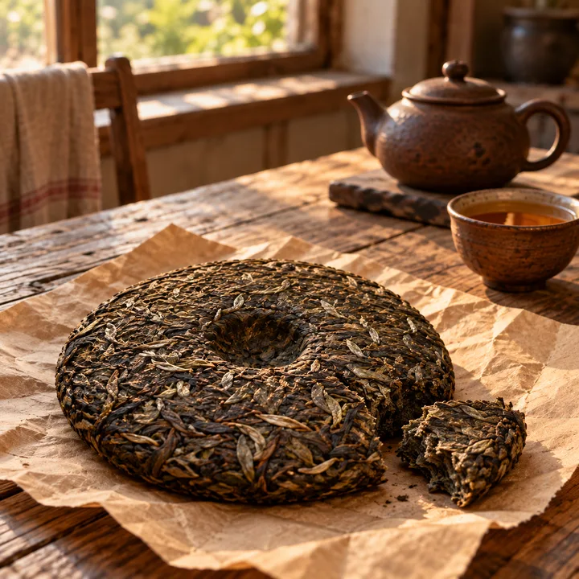
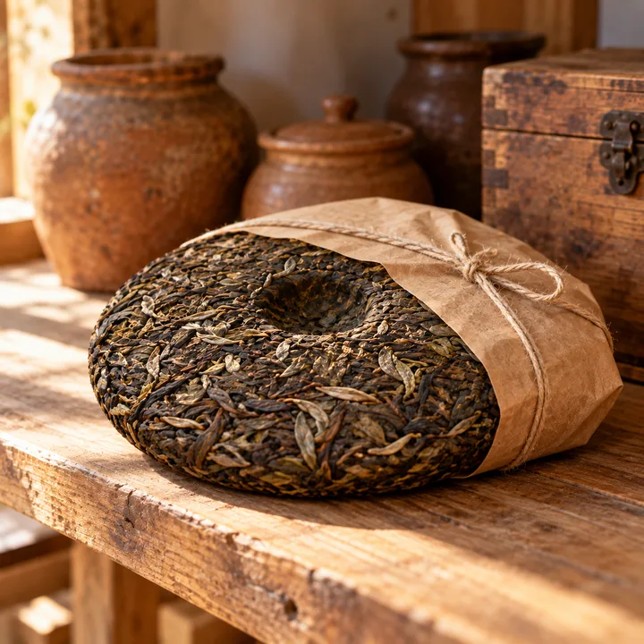
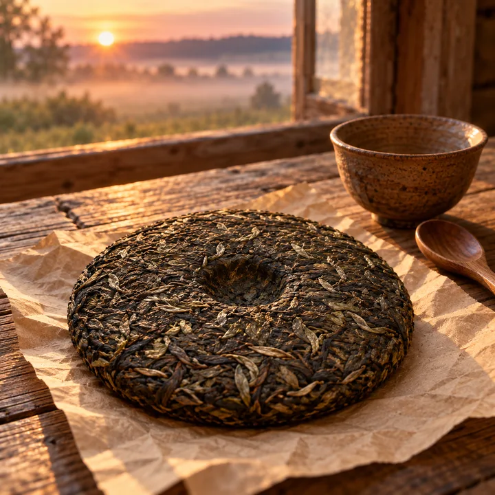
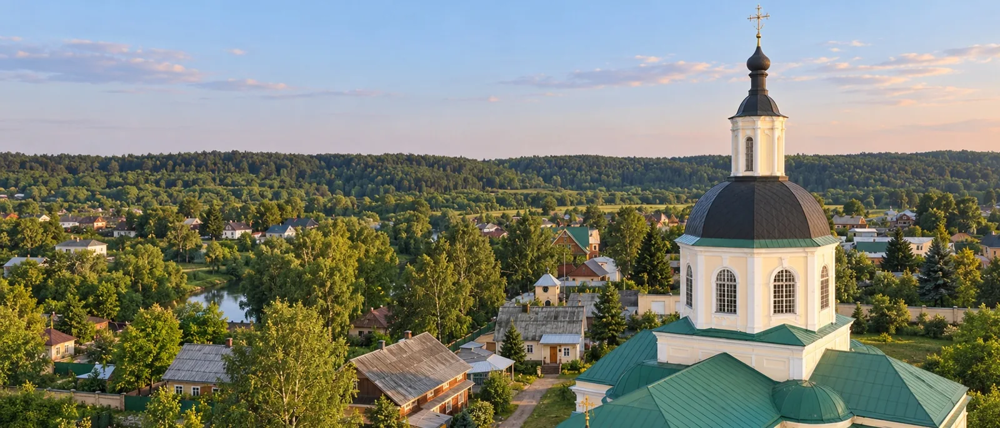
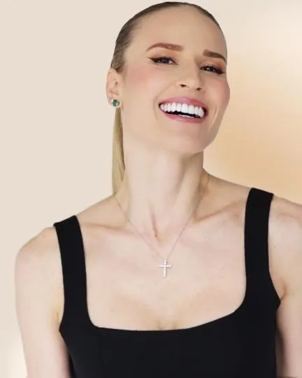

«Лёгкость»
Когда хочется лёгкости во всём теле
3 000 ₽за 100 г
Заказать «Лёгкость»Травяные сборы по монастырской рецептуре
Сборы по рецептуре игумена Михаила из Пустыни Спаса Нерукотворного; каждый сбор назван по ощущению, а не по диагнозу

Пять сборов
Одна рецептура монастыря, пять составов и одна цена у всех

Когда хочется лёгкости во всём теле
3 000 ₽за 100 г
Заказать «Лёгкость»
Для лёгкости в ногах к вечеру
3 000 ₽за 100 г
Заказать «Лёгкие ноги»
Для спокойного самочувствия после еды
3 000 ₽за 100 г
Заказать «Комфорт»
Для свежести в течение дня
3 000 ₽за 100 г
Заказать «Баланс»
Когда хочется начать с чистого листа
3 000 ₽за 100 г
Заказать «Обновление»Цена одна у всех пяти составов — 3 000 ₽ за 100 г
Откуда рецептура
Игумен Михаил · Пустынь Спаса Нерукотворного, Козельский район Калужской области

Отец Михаил родом из Крыма. Ребёнком родители привели его к старому травнику, который сам составлял сборы.
В 90-е дело деда продолжала его внучка. Перенимать её опыт никто не взялся.
Отец Михаил вместе с другом по семинарии, который служит в Крыму, выкупили у её детей рецептуру: составы и то, как именно их собирать.
Так у них появилась целая кладовая сборов.
5 составов — все из рецептуры игумена Михаила
Направление ведёт Ирина Довгалева — о ней ниже.
Кто ведёт направление
Ирина Довгалева · мастер естественного омоложения, учится на фитотерапевта
В прошлом Ирина — спортсменка. Она поняла, что в естественном омоложении результат даёт только комплексный подход, и любит разбираться в причинах.
Сначала была онлайн-школа естественного омоложения, потом — свой бренд косметики Diva Diamond. Травы работают на клеточном уровне — и чтобы изучить это подробнее, Ирина занялась травами и пошла учиться на фитотерапевта.

Заказ и вопросы
Ответим на вопросы о составах и поможем выбрать сбор под ваше настроение
Напишите, что хочется почувствовать, и мы подскажем сбор
Травяное хозяйство